TC-01 · CA-01 · PASSOU
Boas-vindas e menu
Raiz mostra Tao Vita e Entrar. Menu: Atlas, Yamamoto, Auriculoterapia, Veterinária, Massagem, Método, Documentos.
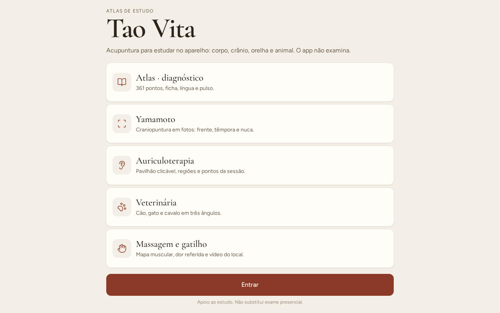
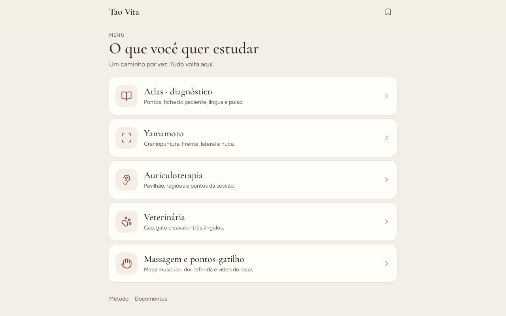
Documento de homologação · HOMO-TV-2.1
Aceite funcional de todo o aplicativo: cinco módulos, 18 rotas, mapas clicáveis, consulta, ficha e documentos. Evidências capturadas em 9/09/2026.
Homologação ponta a ponta do produto atual — não só o atlas. Cobre boas-vindas, menu, atlas/diagnóstico, Yamamoto, auriculoterapia, veterinária, massagem/gatilho, consulta, ficha, documentos, 404 e consistência dos dados clínicos. Não é certificação médica.
| Módulo | O que existe | Checagem |
|---|---|---|
| Boas-vindas / Menu | Entrar → cinco caminhos + Método e Documentos | OK |
| Atlas | 14 canais, 361 pontos com foto e ficha, busca (IG4 / LI4 / Shenmen) | OK |
| Protocolos | 38 queixas, 51 síndromes, busca e vazio | OK |
| Consulta | Ranking determinístico, CTA protocolo e ficha | OK |
| Orelha | 34 pontos, regiões, NADA, protocolos ligados | OK |
| YNSA | 31 pontos em 3 vistas; J/K só no texto | OK |
| Veterinária | Cão, gato, cavalo · corpo, dorso, cabeça · 26 pontos | OK |
| Massagem | 72 gatilhos, 9 placas, vídeo reservado | OK |
| Língua / pulso | Placas originais, zonas, Cun Guan Chi | OK |
| Ficha | Vazia, gerada pela consulta, PDF / copiar / imprimir | OK |
| Vasos | Oito extraordinários + extras clicáveis | OK |
| Documentos | PDF 18 MB, HTML, galeria, esta homologação | OK |
| ID | Critério | Resultado |
|---|---|---|
| CA-01 | Boas-vindas e menu levam aos cinco módulos | Atendido |
| CA-02 | Protocolos listam queixas; busca vazia tem estado vazio | Atendido |
| CA-03 | Protocolo abre corpo, orelha, YNSA, cautela e ficha da sessão | Atendido |
| CA-04 | Consulta ranqueia síndromes com % e gera ficha | Atendido |
| CA-05 | Orelha e YNSA clicáveis, com ficha do ponto | Atendido |
| CA-06 | Vet (3 espécies × 3 ângulos) e massagem (mapas + dor referida) | Atendido |
| CA-07 | 361 pontos abrem com foto; WHO (LI4→IG4); extra (Dingchuan); código inválido vazio | Atendido |
| CA-08 | Ficha copia, persiste no aparelho, exporta PDF | Atendido |
| CA-09 | 404 e vazios em português, com CTA | Atendido |
| CA-10 | Rodapé educacional; Método declara limites; sem “cura / garante / diagnóstico automático” | Atendido |
| CA-11 | Utilizável em 390×844, sem overflow horizontal, alvos grandes | Atendido |
| CA-12 | Todas as 18 rotas HTTP 200 (404 só em caminho inexistente), console sem erro de app | Atendido |
| CA-13 | Integridade: todo código de corpo/orelha/YNSA dos protocolos resolve; 361 fotos presentes | Atendido |
| CA-14 | Cada protocolo tem 2–4 síndromes | Parcial — ver NC-01 |
Status: PASSOU nos casos funcionais. 18 rotas em desktop e mobile, mais fluxos clicados (Entrar, Diferenciar, Gerar ficha, busca IG4/LI4/Shenmen, troca de vista YNSA/vet/massagem).
TC-01 · CA-01 · PASSOU
Raiz mostra Tao Vita e Entrar. Menu: Atlas, Yamamoto, Auriculoterapia, Veterinária, Massagem, Método, Documentos.


TC-02 · CA-07 · PASSOU
Atlas com 8 queixas e 14 canais. Pulmão lista 11 pontos. E36 abre ficha. Busca LI4 (WHO) abre IG4 · Hegu. Shenmen abre a orelha.
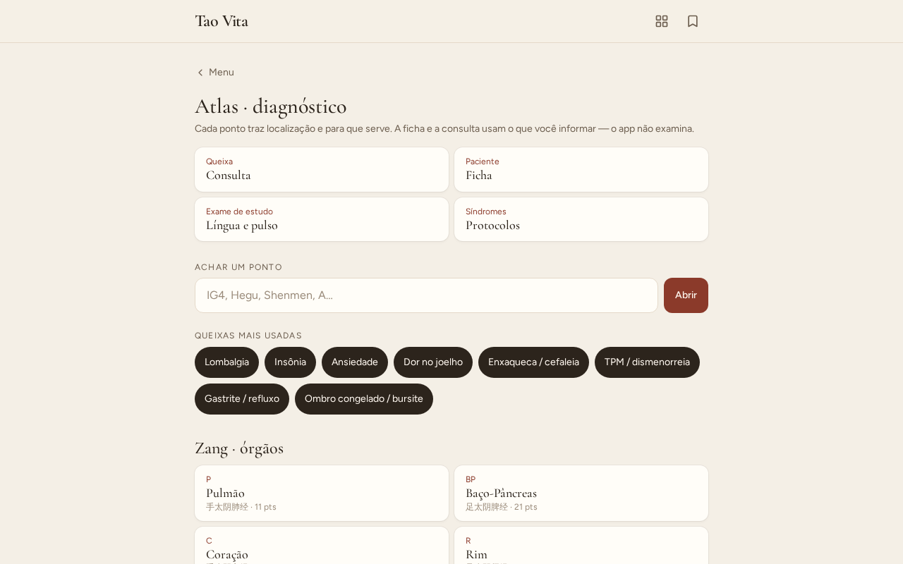
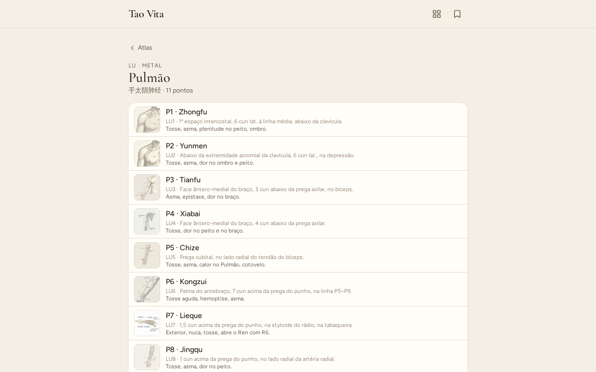
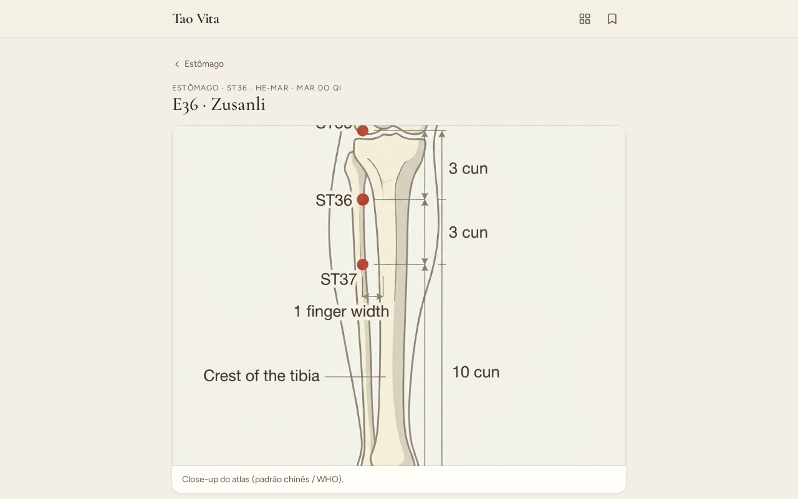
TC-03 · CA-02 CA-03 · PASSOU
38 protocolos. Busca “zzzz-nao-existe” → Nada encontrado → Limpar restaura 38. Lombalgia: duas síndromes, pontos clicáveis, orelha, YNSA, ficha da sessão.
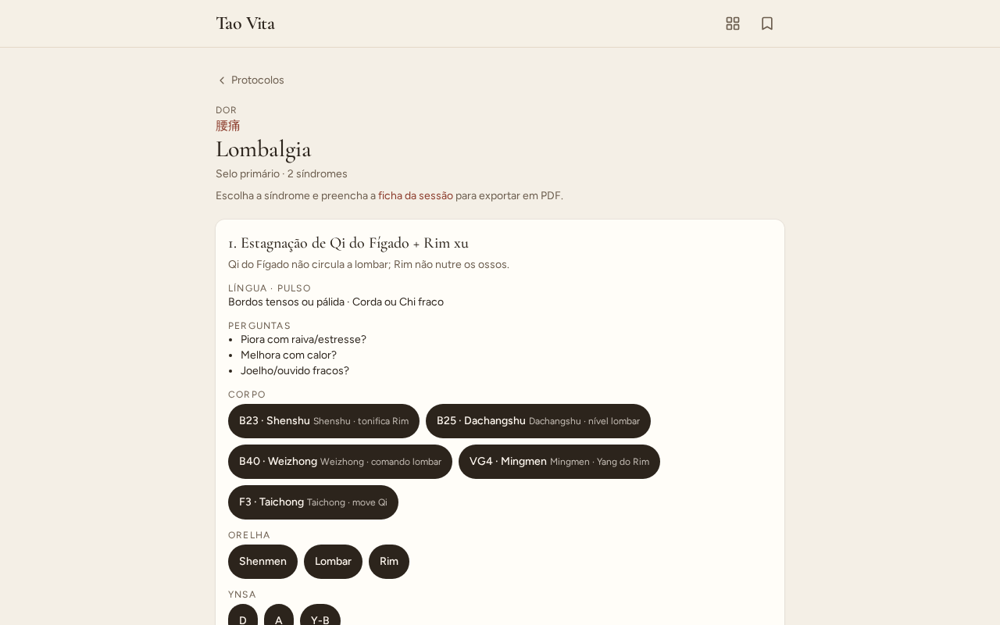
TC-04 · CA-04 CA-08 · PASSOU
Diferenciar em Lombalgia gera ranking com %. Gerar ficha da sessão preenche o texto (data, queixa, síndrome, pontos). Ficha vazia tem CTA.
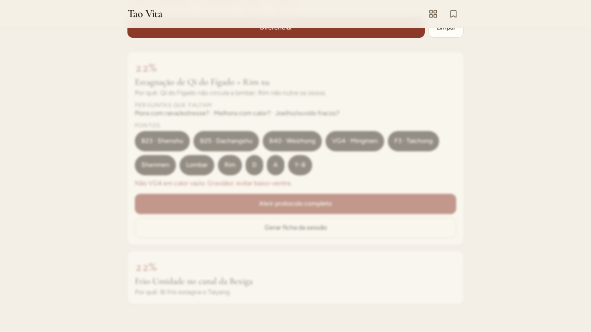
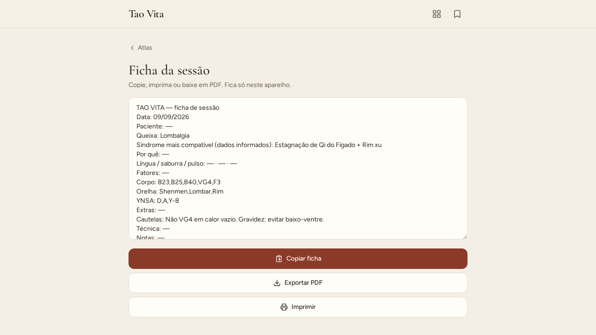
TC-05 · CA-05 · PASSOU
Shenmen seleciona ficha + protocolos ligados. YNSA frente / lateral / nuca mudam a placa e os pontos.
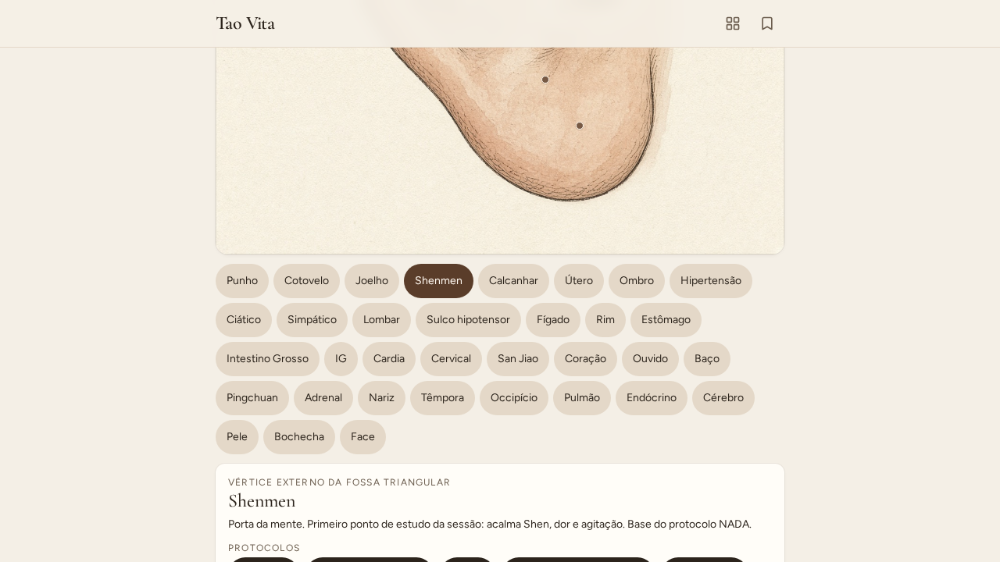
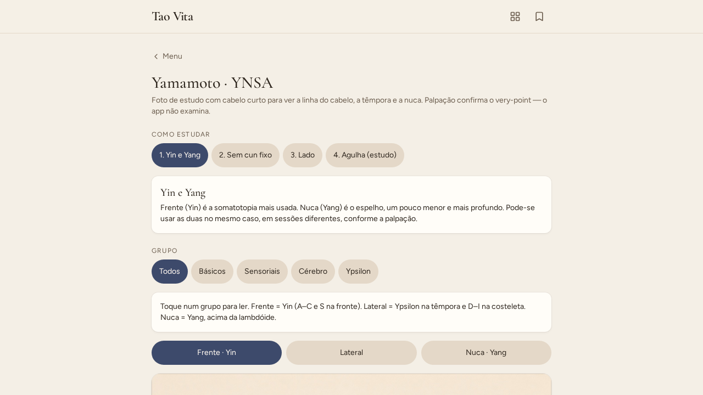

TC-06 · CA-06 · PASSOU
Cão/gato/cavalo, três ângulos, pontos com equivalente humano. Massagem: queixa lombar, cervical, mapa, dor referida, slot de vídeo reservado.
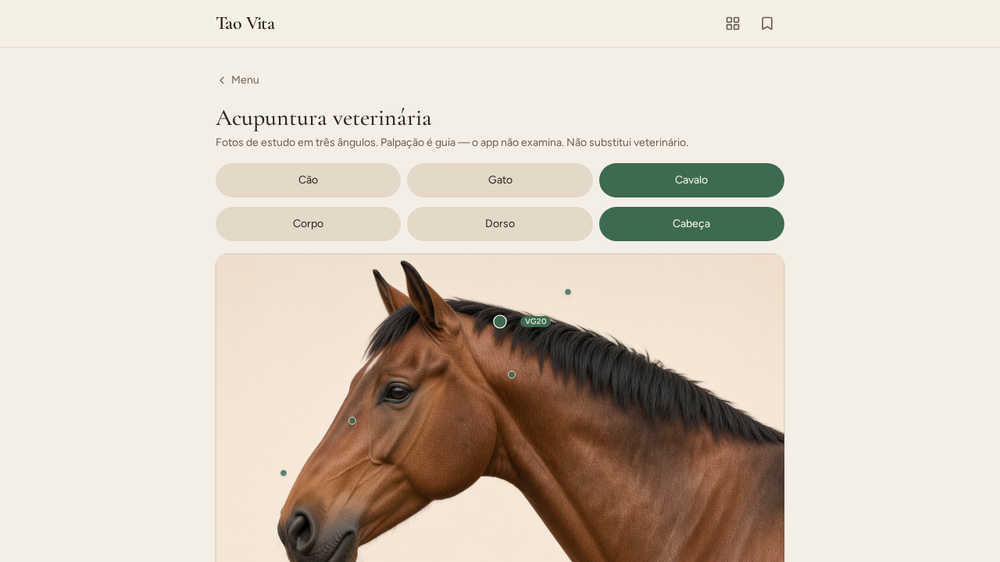
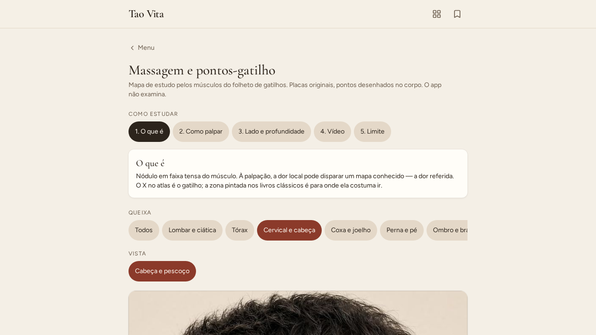
TC-07 · CA-10 CA-09 · PASSOU
Diagnóstico: cinco fatores, zonas da língua, Cun/Guan/Chi. Documentos baixam. Rota inexistente: “Página não encontrada” com volta ao menu, rodapé educacional visível.
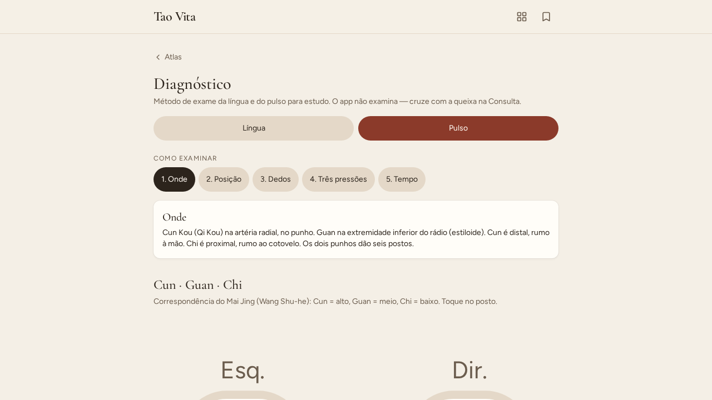
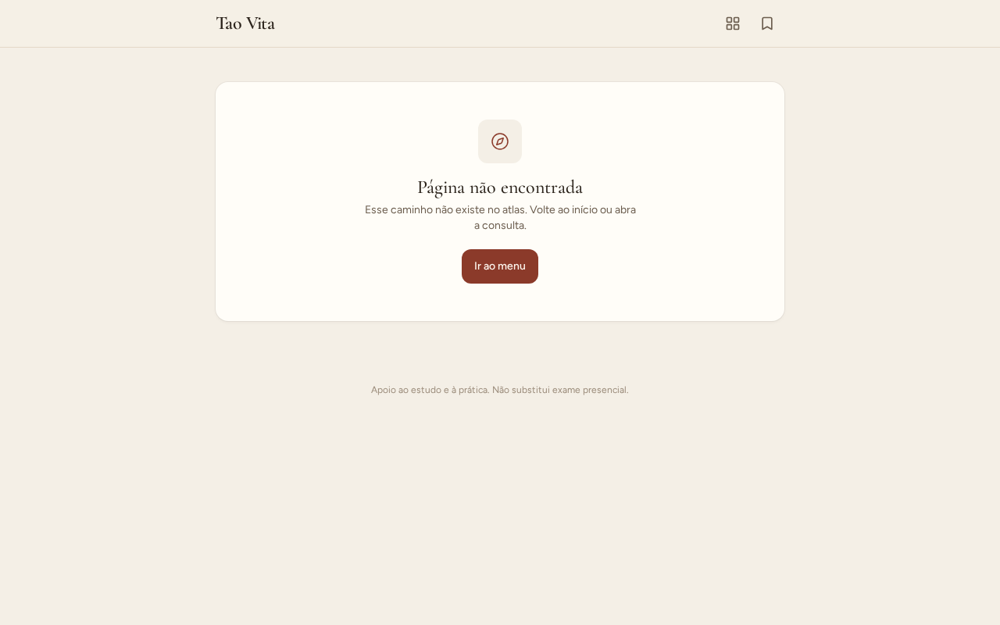
TC-08 · CA-11 · PASSOU
Boas-vindas, menu, atlas, consulta, orelha, YNSA, vet, massagem: sem overflow horizontal, console limpo.
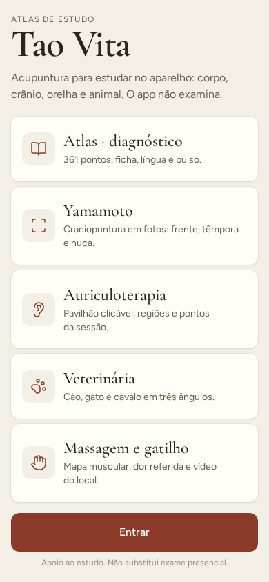
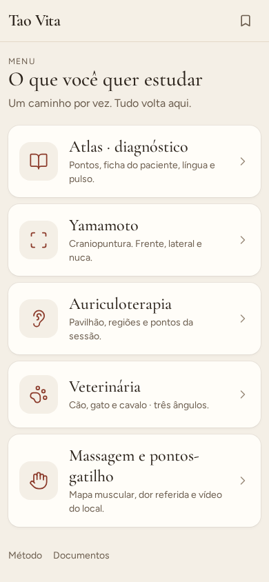
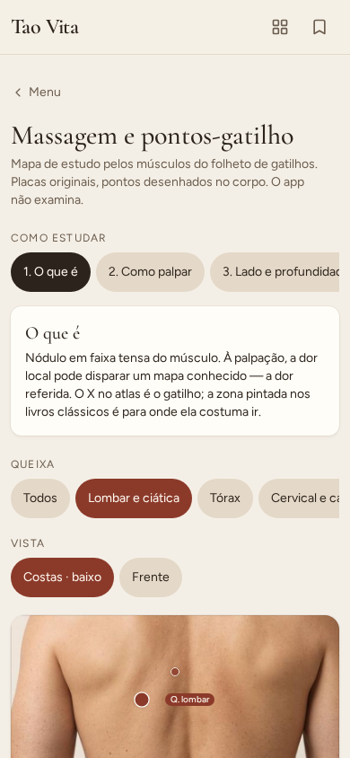

| Checagem | Resultado |
|---|---|
| 38 protocolos, 51 síndromes, slugs únicos | OK |
| 361 pontos = soma dos 14 meridianos; 361 fotos em disco | OK |
| Todo código de corpo nos protocolos resolve (getPoint / extras) | OK |
| Todo rótulo de orelha nos protocolos existe no mapa (34) | OK |
| Todo rótulo YNSA nos protocolos existe no mapa/lista | OK |
| 8 queixas frequentes do atlas existem | OK |
| Placas: orelha, 3 YNSA, 9 vet, 9 gatilho, 16 línguas | OK |
| Documentos HTML + PDF HTTP 200 | OK |
| Palavras proibidas (cura / garante / diagnóstico automático) no grafo | Ausentes |
| ID | Tipo | Descrição | Impacto |
|---|---|---|---|
| NC-01 | Conteúdo | 27 dos 38 protocolos têm só 1 síndrome (a meta original era 2–4). 11 já ramificam (lombalgia, insônia, ciática, etc.). Copy da lista foi ajustada nesta rodada para não prometer 2–4 em todos. | Médio para estudo de diferenciação. Não quebra o fluxo. |
| NC-02 | Mídia | Vídeo da palpação na massagem é slot reservado — ainda sem arquivo. | Baixo. |
| NC-03 | YNSA | J e K (pé) sem placa calibrada, só texto. Correto pedagogicamente. | Baixo. |
| NC-04 | Meta | 38 protocolos (meta inicial 40). | Baixo. |
| OBS-01 | Clínico | O app não examina. Texto presente no rodapé, Método, Consulta, mapas. | Informativo. |
| OBS-02 | Privacidade | Ficha só no aparelho. Sem login, sem nuvem. | Informativo. |
| OBS-03 | Consulta | Sem língua/pulso o ranking empata no basal (22%). Informe dados para diferenciar de verdade. | Informativo. |
Nenhuma NC impede publicação da v2.1. NC-01 é a única ressalva de aceite (CA-14 parcial).
APROVADO PARA PUBLICAÇÃO RESSALVA NC-01
O Tao Vita v2.1 passou na homologação funcional de todos os módulos. As 18 rotas renderizam em desktop e telefone, os mapas respondem ao toque, a consulta gera ficha, os dados clínicos cruzam sem código órfão. A ramificação de síndromes ainda é incompleta em 27 queixas — isso não impede uso de consultório, mas fica no backlog clínico. Revisão humana ponto a ponto permanece aberta, como a página Método já declara.
Preencher à mão ou digitalmente. A ausência de assinatura clínica não anula o parecer técnico de publicação.